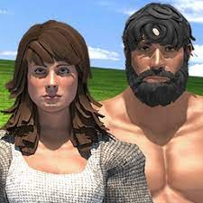
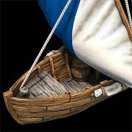
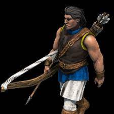
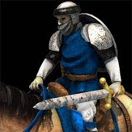
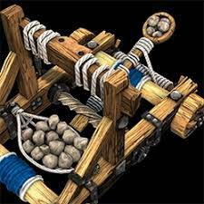

Edificios
Alta edad media
En la alta edad media encontramos, al centro urbano, casas, cuartel, muelle, puesto avansado,empalizada, Campamento maderero,Campamento minero, Molino, Granja
Edad feudal
Galería de tiro con arco, Establo, Mercado, Muro de piedra, Torre de guardia, Trampa para peces, Puerta, Herreria.Edad de los castillos
Centro Urbano, Castillo, MonasterioTaller de maquinaria de asedio, Universidad, Muralla Fortificada,Torre de vigilancia.Edad Imperial
Maravilla, Torre de Homenaje, Torre de bombardeo, Factoria (Sólo Portugues).Edificios mas importantes
de los mencionados los que se destacan por su importancia son:Centro Urbano:
En este se crean los aldeanos, mejoras de estos y se avanza de edad.Cuartel
En este se crean las unidades militares como, la infanteria y lanzeros.Muelle
En este se crean los barcos.Arqueria:
Se crean y mejoran los arqueros.caballeria:
Se crea y mejora la caballeria.Herreria:
Investiga mejoras de ataque y armadura para las unidades de infantería, caballería y arqueros.Unidades
Las undidades del Age Of Empires 2 son:
Unidades civiles
Las unidades civiles se limitan a mantener la economía del imperio.
Aldeanos:
suponen la base económica del imperio. Sus funciones son la recolección y almacenaje de recursos naturales: oro, piedra, madera y alimento; y la construcción y reparación de edificios, e incluso de barcos. Los aldeanos son extremadamente débiles en combate, por ello pueden guarecerse en edificios defensivos si la ciudad está sufriendo un ataque enemigo.
Pesqueros:
se encargan de pescar en el mar y almacenar el alimento en los muelles.barcos de transporte:
al igual que los pesqueros no atacan, solo son útiles para transportar unidades terrestres a través del mar.
Unidades comerciales:
son las carretas de mercancías y urcas mercantes marítimas, realizan viajes de ida y vuelta entre ciudades aliadas creando así rutas comerciales y generando oro para el imperio.Unidades militares
Las unidades militares se encargan de la defensa del imperio y del ataque sobre imperios enemigos.
Infantería:
unidades a pie que combaten en primera línea de batalla: milicia, hombre de armas, espadachín espada larga, espadachín de mandoble, campeón, lancero, piquero, etc.
Arqueros:
unidades a pie o montadas que lanzan flechas, lanzas o pegan disparos (armas de fuego), pudiendo matar a distancia: arquero, ballestero, arbalestero, guerrillero, guerrillero de élite, artillero manual, etc.
Caballería:
unidades montadas a caballo, camello o elefante que pueden desplazarse a gran velocidad (quitando con elefante): caballería de exploración, caballería ligera, jinete, caballero, paladín, etc.
Armas de asedio:
máquinas generalmente frágiles y poco eficaces en la batalla, pero que son de gran ayuda para derribar edificios: ariete, ariete cubierto, ariete de asedio, catapulta de trayectoria plana, onagro, onagro de asedio, etc.
Barcos de guerra:
unidades que se desplazan por el agua y entablan batallas navales con los enemigos. Algunas de éstas unidades marítimas son: galera, galera de guerra, galeón, brulote, brulote rápido, etc. Algunos como los galeones artillados también son eficaces para destruir edificios. Unidades unicas y tecnologias.
Unidades unicas y tecnologias.